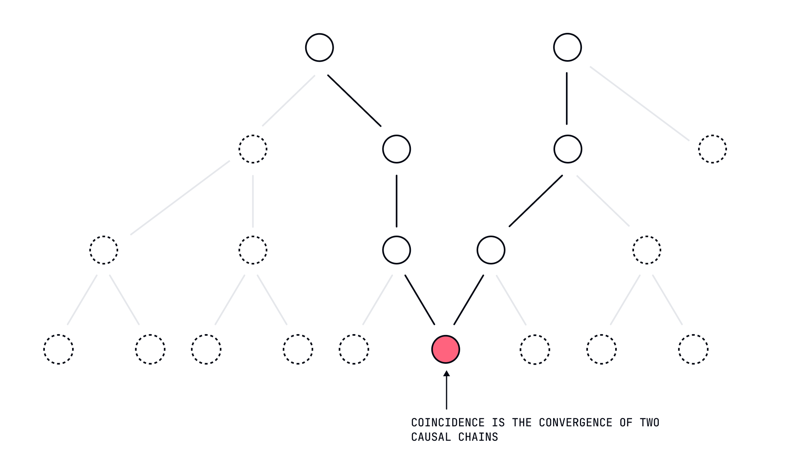
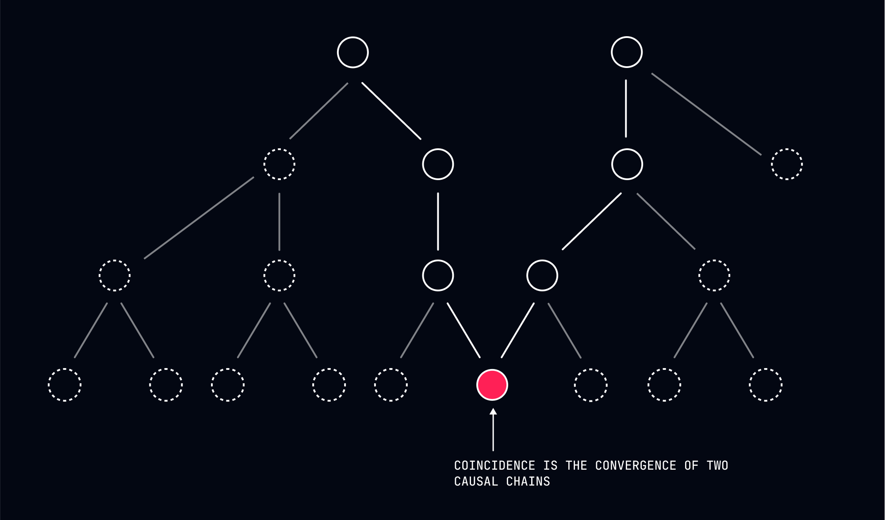

Dealing with Coincidence
If something does go the way you intended, realize that this was purely coincidental.


The Seductive Illusion of Causation
In our previous lessons, we've focused primarily on navigating the inevitable disappointments and hardships that the indifferent universe will inflict upon you. But what about when things actually go well? What about those moments when reality aligns with your intentions, when your efforts appear to produce exactly the results you wanted?
These moments of apparent success create perhaps the most dangerous illusion of all: the belief that you caused the positive outcome through your choices and efforts. This illusion is seductive precisely because it seems so logical—you wanted X, you did Y, and X occurred. Surely your actions caused the result?
This reasoning isn't just flawed—it's a complete misunderstanding of causality. When outcomes align with your intentions, this alignment is purely coincidental—the result of causal factors that happened to produce both your intention and the matching outcome.
The Reality of Coincidental Alignment
To understand coincidental alignment, we must first recognize how intentions and outcomes are actually related:
Your intentions weren't freely chosen but were determined by causal factors including your genetics, past experiences, current circumstances, and unconscious motivations. The outcome wasn't created by your intentions but emerged from a vast causal network including countless factors outside your awareness or control.
When intention and outcome align, it's not because your intention caused the outcome. It's because the same causal system produced both your intention and an outcome that happens to match it. This is coincidence, not causation.
The entrepreneur whose business succeeds didn't cause that success through wise choices and determined effort. Their apparent choices and efforts were determined by the same causal factors that produced the market conditions, timing, and circumstances that enabled the business to thrive. The alignment between their actions and positive outcomes was coincidental, not causal.
The Danger of Success Attribution
The belief that you caused positive outcomes through your choices and efforts isn't just philosophically incorrect—it's practically dangerous. This misattribution creates:
-
Inflated Sense of Control - You begin to believe you can reliably produce similar outcomes in the future, ignoring the role of factors outside your influence.
-
Unrealistic Expectations - You develop expectations that future efforts will produce similar results, setting yourself up for inevitable disappointment when coincidental alignment doesn't recur.
-
Harsh Self-Judgment - When similar efforts don't produce similar outcomes (as they often won't), you blame yourself for failing rather than recognizing the role of changed circumstances.
-
Diminished Adaptability - You become rigidly attached to approaches that coincidentally worked before, reducing your responsiveness to changing conditions.
The person who attributes their promotion to their hard work rather than to coincidental factors (timing, office politics, economic conditions) develops a dangerously simplified understanding of how outcomes actually emerge. This misunderstanding doesn't just create philosophical confusion but practical vulnerability to inevitable shifts in circumstance.
Practical Techniques for Recognizing Coincidence
The Causal Inventory Practice
When experiencing a positive outcome that aligns with your intentions, inventory the full range of causal factors that contributed to the result:
- What factors outside your control were necessary for this outcome?
- What historical causes set the conditions for this result?
- What other people's predetermined actions influenced this situation?
- What societal, economic, or environmental factors played a role?
This inventory doesn't diminish your participation in the process but places it in proper context as one small factor in a vast causal network. The job candidate who gets hired didn't cause this outcome through their impressive interview but participated in a process determined by countless factors including the employer's needs, the qualifications of other candidates, economic conditions, and timing.
The Parallel Universe Meditation
Imagine multiple versions of the same situation unfolding in parallel universes where small factors outside your control are slightly different:
- The key decision-maker had a fight with their spouse that morning
- The economic conditions shifted slightly before the outcome emerged
- A competitor made a different predetermined move
- Your physical energy was lower due to minor illness
This meditation highlights how easily the same intentions and efforts could have coincided with different outcomes due to factors outside your influence. The recognition that slight changes in circumstance would have produced different results reveals the coincidental nature of alignment between intention and outcome.
The Historical Pattern Recognition
Examine patterns in your past experiences where similar intentions and efforts produced different outcomes in different circumstances:
- Times when the same approach succeeded in one context but failed in another
- Situations where reduced effort paradoxically produced better results
- Cases where external factors clearly determined outcomes despite your consistent approach
This pattern recognition doesn't create choice but reveals the coincidental nature of past successes. The salesperson who used the same pitch with different results in different economic conditions isn't choosing differently but experiencing how external factors determine outcomes regardless of consistent intentions.
The Success Decomposition Exercise
Take a recent success and systematically decompose it into its causal components, distinguishing between:
- Factors you were aware of vs. factors operating outside your awareness
- Variables you could influence vs. variables beyond your influence
- Stable elements vs. timing-dependent elements
- Your predetermined actions vs. others' predetermined actions
This decomposition doesn't diminish your success but clarifies its coincidental nature. The student who aced the exam didn't cause this outcome through studying but participated in a process determined by their cognitive abilities, the specific questions selected, their physical state on test day, and countless other factors.
Case Study: The Investment "Decision"
Consider Jennifer, who invested in a particular stock that subsequently doubled in value. From a free will perspective, Jennifer made a wise choice that caused her financial gain. From a deterministic perspective, Jennifer's apparent decision and the stock's performance were both determined by causal factors that coincidentally aligned.
After practicing coincidence recognition, Jennifer didn't diminish her participation in the process but recognized its coincidental nature. She identified how her investment "decision" was determined by information she happened to encounter, risk tolerance shaped by past experiences, financial circumstances that enabled investment, and psychological patterns directing her attention.
More importantly, Jennifer recognized how the stock's performance was determined by factors entirely separate from her decision-making process: market conditions, company leadership decisions, competitor actions, regulatory changes, and technological developments. The alignment between her predetermined investment and the stock's predetermined performance was coincidental, not causal.
This recognition didn't make Jennifer less likely to invest in the future (her future actions were also predetermined) but prevented the dangerous illusion that she could reliably cause similar outcomes through similar "decisions." When subsequent investments inevitably performed differently despite similar analysis, Jennifer wasn't shocked or self-blaming but recognized the changed circumstances that produced different results.
The Paradoxical Benefits of Coincidence Recognition
Perhaps the most counterintuitive aspect of recognizing coincidental alignment is how it can improve your experience of both success and failure. By understanding that positive outcomes weren't caused by your choices but coincidentally aligned with them, you create conditions where your predetermined nature can respond more adaptively to changing circumstances.
The person who recognizes the coincidental nature of past successes doesn't become less motivated (if motivation is part of their predetermined nature) but becomes more adaptable when circumstances change. The entrepreneur who understands that their first venture's success was largely coincidental doesn't work less hard on their second venture but approaches it with more realistic expectations and greater responsiveness to its unique conditions.
This isn't choosing different behaviors (impossible) but removing the distorting lens of success attribution that would otherwise make your predetermined responses less aligned with changing reality.
The Liberation of Coincidental Understanding
There's a profound liberation in recognizing that when things go well, it's not because you masterfully caused the outcome but because causal factors coincidentally aligned in your favor. This recognition doesn't diminish your accomplishments but places them in proper context within a determined causal network.
When you stop believing you caused positive outcomes, you can release both the inflated responsibility for success and the crushing blame for failure. Both success and failure emerge from causal networks largely outside your control, with your predetermined actions playing just one small part in vast systems of cause and effect.
This understanding doesn't create passivity. Your predetermined nature will still direct you to pursue desired outcomes and respond to results. But this pursuit can occur without the distorting belief that you can reliably cause specific outcomes through your choices and efforts.
The Gratitude of Coincidence
Recognizing the coincidental nature of positive outcomes naturally generates a form of gratitude—not to a conscious universe or divine plan, but to the impersonal causal factors that happened to align in your favor. This isn't mystical gratitude but factual recognition that countless factors outside your control coincidentally produced circumstances beneficial to you.
The person who gets the job, finds the partner, or achieves the goal isn't experiencing the results of their wise choices and determined efforts. They're experiencing the coincidental alignment of causal factors that happened to produce both their predetermined actions and favorable outcomes. This recognition doesn't diminish joy but adds the dimension of genuine gratitude for coincidental fortune.
Next Steps
In our next lesson, "Forgiving Others," we'll explore how understanding the determined nature of behavior transforms our relationship with those who harm or disappoint us. We'll examine how recognizing that others' actions are beyond their control makes punishment and resentment logically incoherent.
Remember: You didn't choose to read this lesson, and you won't choose whether to recognize coincidental alignment in your life. But understanding that positive outcomes weren't caused by your choices might inevitably free you from both